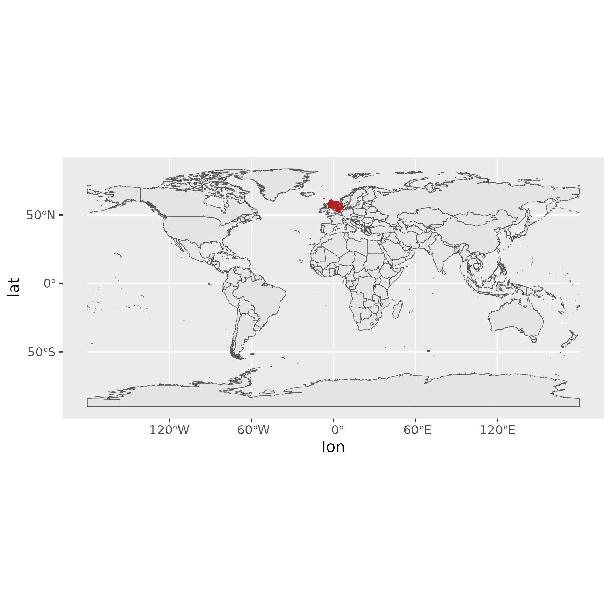
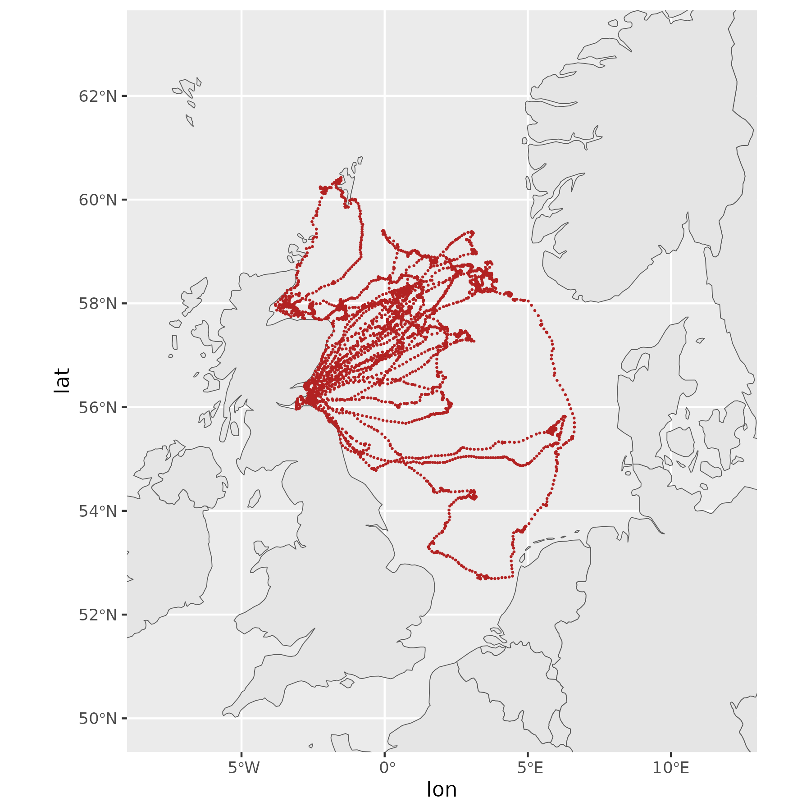
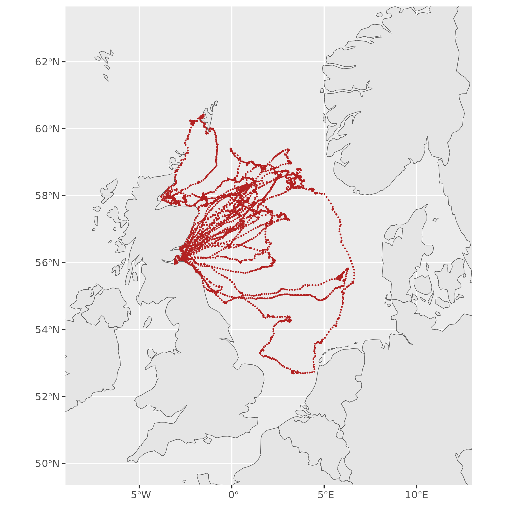
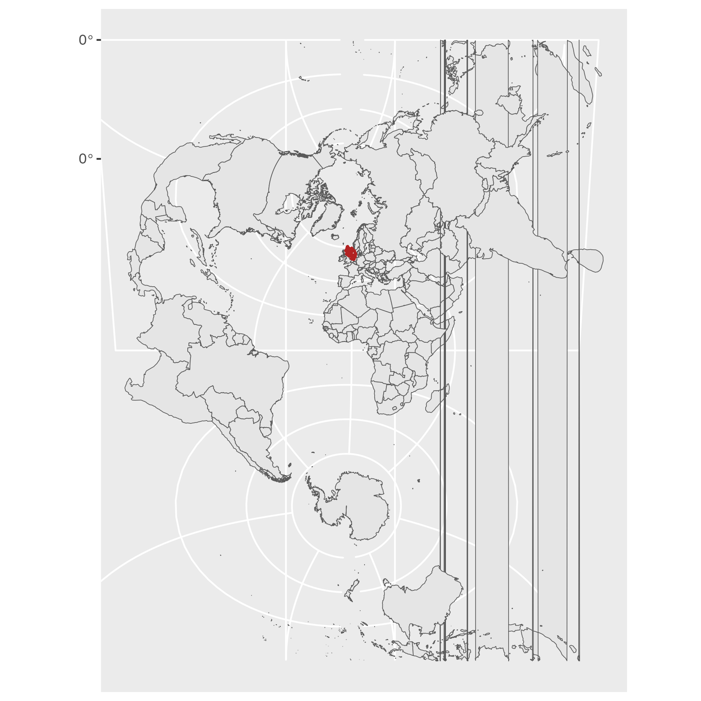
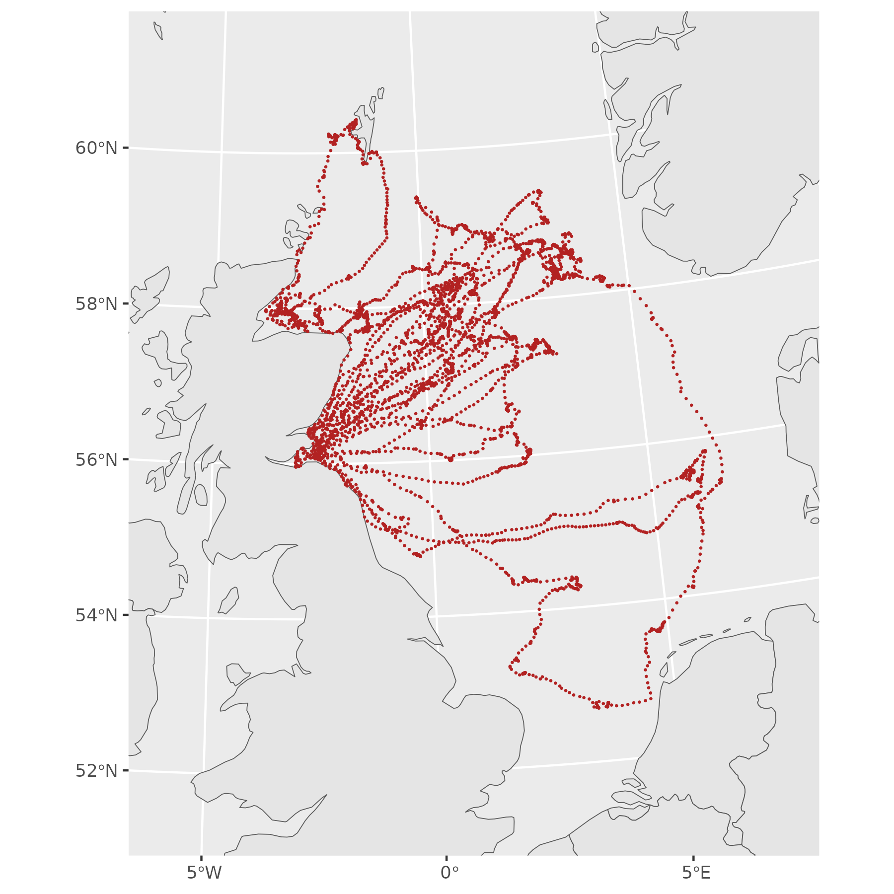
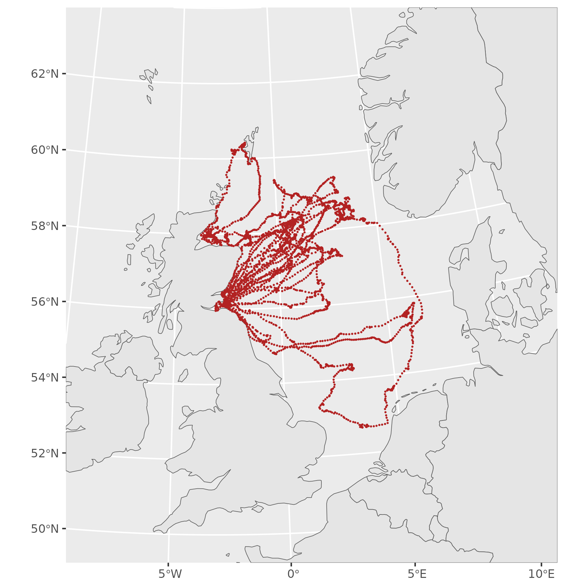
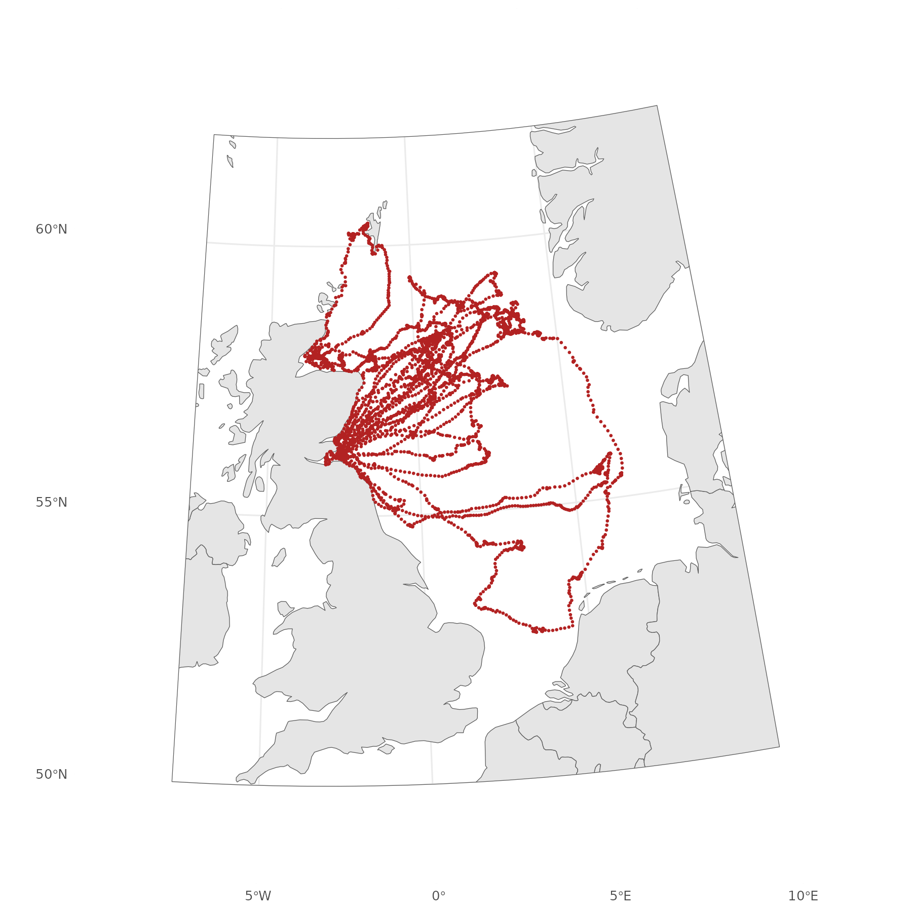
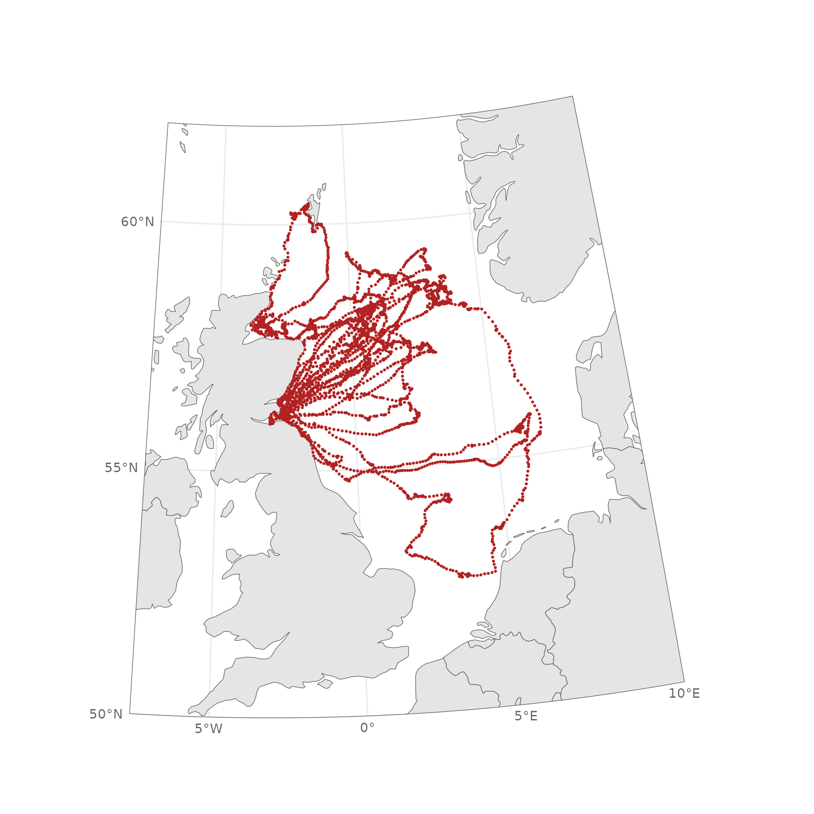
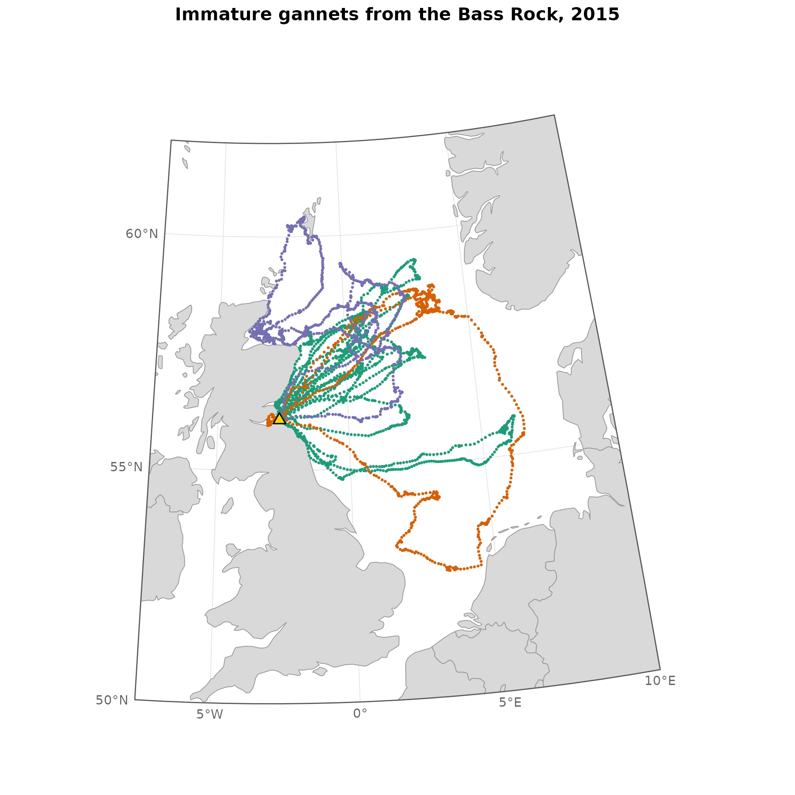
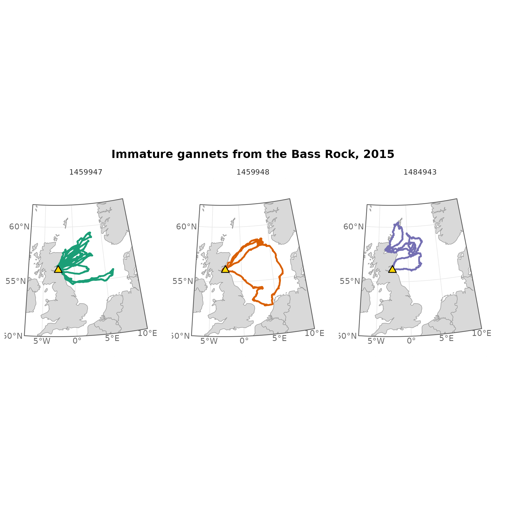

It’s easy to make a quick map in R using just a few steps. It can be
tricky to make a publication ready map consistently. That’s where
mapr can help. Given a set of locations, for example from a
tagged marine animal, the main mapr function will load a
global shapefile from the Natural Earth database and automagically
manipulate it for plotting using ggplot2 and
sf.
This guide builds a map of seabird tracks one step at a time, starting with the plot most people make first and ending with one you could put in a report. Each step changes one thing, so you can see what each piece of code does.
We’ll use three packages: mapr, sf and
ggplot2. There is a small example dataset within
mapr containing GPS tracks from three immature northern
gannets tagged on the Bass Rock.
library(mapr)
library(sf)
library(ggplot2)
data(gannets)
head(gannets)
#> id trip datetime_utc lon lat
#> 1 1459947 1459947.01 2015-07-08 10:40:00 -2.684659 56.13044
#> 2 1459947 1459947.01 2015-07-08 10:50:00 -2.656502 56.17597
#> 3 1459947 1459947.01 2015-07-08 11:00:00 -2.624861 56.23450
#> 4 1459947 1459947.01 2015-07-08 11:10:00 -2.588579 56.30267
#> 5 1459947 1459947.01 2015-07-08 11:20:00 -2.660515 56.35288
#> 6 1459947 1459947.01 2015-07-08 11:30:00 -2.754221 56.40356The tracks are in a tibble, which is a form of “tidy”
data frame, with longitude and latitude columns.
1. The first attempt
The obvious start is a coastline with the tracks plotted on top as points, longitude on x and latitude on y.
The rnaturalearth R package provides an easy way to
download a shapefile and plot a map of the world. If you ask for the
sf version then plotting with geom_sf() makes
dealing with spatial data a lot easier.
world_shp <- rnaturalearth::ne_countries(scale = "medium", returnclass = "sf")
ggplot() +
geom_sf(data = world_shp) +
geom_point(data = gannets, aes(x = lon, y = lat),
colour = "firebrick", size = 0.1)
That’s the whole world, with the gannets as a red smudge off Scotland. Natural Earth gives you every country, and ggplot draws everything it’s given.
2. Zooming in
The natural next move is to zoom in by setting the limits, in degrees:
ggplot() +
geom_sf(data = world_shp) +
geom_point(data = gannets, aes(x = lon, y = lat),
colour = "firebrick", size = 0.1) +
coord_sf(xlim = c(-8, 12), ylim = c(50, 63))
This looks like a North Sea map, and for a quick look it’s fine. But look at the grid lines. The lines of longitude are parallel, so every grid cell is a rectangle. On the real Earth, lines of longitude converge towards the pole: a degree of longitude is about 111 km wide at the equator and only about 55 km at Shetland. The map is quietly stretching the north and squashing the south.
3. Projecting
The fix is to draw the map in a projection: a way of flattening the curved Earth that keeps distances and shapes close to right over the area you care about. For the North Sea, a common choice is UTM zone 30N:
prj <- "+proj=utm +zone=30 +datum=WGS84 +units=m +no_defs"So far ggplot has treated lon and lat as
ordinary x and y numbers. That worked because the coastline was in
longitude and latitude too, so the numbers matched. Once the map is
projected, x and y are metres, and plotting raw longitudes as if they
were metres would put the gannets somewhere near the equator. ggplot
needs to know the tracks are coordinates, and which coordinate system
they’re in, so it can convert them.
That’s what st_as_sf() does. GPS data is almost always
longitude and latitude on WGS84, which has the code 4326:
Note the order in coords: longitude first, then
latitude. Get it the wrong way round and your gannets will turn up in
the Indian Ocean.
Now that we’ve told R the gannet data is spatial we can plot it
natively in ggplot using geom_sf():
ggplot() +
geom_sf(data = world_shp) +
geom_sf(data = gannets_sf, colour = "firebrick", size = 0.1) +
coord_sf(xlim = c(-8, 12), ylim = c(50, 63))
But although the data are spatial they have not yet been projected.
We can do this with st_transform():
world_utm <- world_shp |> st_transform(prj)
gannets_utm <- gannets_sf |> st_transform(prj)
ggplot() +
geom_sf(data = world_utm) +
geom_sf(data = gannets_utm, colour = "firebrick", size = 0.1)
It is obviously wrong to project the whole world onto a UTM30N projection, but it shows you how the projection works: it is correct for our study area and increasingly wrong everywhere else. So instead we crop. Note that the limits are now in metres, not degrees, and that the graticules now curve.
ggplot() +
geom_sf(data = world_utm) +
geom_sf(data = gannets_utm, colour = "firebrick", size = 0.1) +
coord_sf(xlim = c(300000, 1200000), ylim = c(5700000, 6800000))
If you’re wondering where numbers like those come from,
st_bbox(gannets_utm) gives the extent of the tracks in
metres, which is a good starting point.
4. Letting mapr do the work
At this point you can begin to assemble a plot for publication. R and
ggplot do a really good job of making it intuitive, but you can spend
ages tweaking the crop and layout. So at this point I’d introduce you to
mapr, a small R package I wrote to help.
mapr() does three jobs at once: it fetches the shapefile
we can use for the coastline, crops it to the area around your tracks,
and projects it to a user defined projection. The buff
argument says how far beyond the tracks you want the file to go, in
metres. ggplot automatically pads a plot by 5% on each side; setting
expand = FALSE means you don’t get empty space around your
land shapefile.
land <- mapr(gannets, prj, buff = 400000)
#> although coordinates are longitude/latitude, st_intersection assumes that they
#> are planar
ggplot() +
geom_sf(data = land) +
geom_sf(data = gannets_utm, colour = "firebrick", size = 0.1) +
coord_sf(crs = prj, expand = FALSE) 
This is the same projected map as the one above, but
mapr() has worked out the crop from the tracks for you, and
only the land you need has been kept.
5. Framing
The map above stops wherever mapr() happened to crop it,
and the edges are cut straight through the land. The larger the area you
are studying, the further from a square shape your graticules will be.
For example, polar projections often result in circular plots.
make_map_furniture() is designed to help give a
projected map a proper frame. You choose the extent in degrees, and how
often you want grid lines:
mf <- make_map_furniture(
xmin = -7.5, xmax = 10, ymin = 50, ymax = 62,
crs = prj,
buffer = 200000,
lat_by = 5,
lon_by = 5
)The extent here defines the plot frame in longitude and latitude. The
buffer is a margin around the frame, in metres, which we’ll
use for labels in step 6.
The function returns a list of pieces to add to the plot:
-
mf$cookieis a white shape with a hole the size of your map. Drawn on top of everything else, it hides anything that spills past the frame. -
mf$flywayis the outline of the frame itself. -
mf$xlimandmf$ylimare the plot limits, in the projection’s units. -
mf$meridiansandmf$parallelsare the grid positions and their labels.
The land from step 4 needs to reach past the frame on every side. The
cookie hides anything beyond the frame, but it can’t add land that isn’t
there, so if you see a straight edge cutting through the land inside the
frame, increase buff in mapr().
ggplot() +
theme_minimal(base_size = 8) +
geom_sf(data = land) +
geom_sf(data = gannets_utm, colour = "firebrick", size = 0.1) +
geom_sf(data = mf$cookie, fill = "white", colour = NA) +
geom_sf(data = mf$flyway, fill = NA) +
scale_x_continuous(breaks = mf$meridians$lon) +
scale_y_continuous(breaks = mf$parallels$lat) +
coord_sf(xlim = mf$xlim, ylim = mf$ylim, crs = prj, expand = FALSE)
The order of the layers matters. Land and tracks go first, then the cookie over the top of them, then the frame. Put the cookie first and it will be hidden under the land.
The two scale_ lines set where the grid lines go, using
the positions from the furniture, so the grid matches the extent you
asked for. Without them ggplot picks its own spacing.
ggplot has also automatically put the axis labels around the buffer area, instead we can replace these with the ones stored in the map furniture.
6. Labels
ggplot labels the grid lines itself, at the edge of the plot. With a small buffer and a near-rectangular frame that can work well enough, but with a wide buffer like this one the labels end up out at the edge of the margin, away from the frame. On a map where the frame is noticeably curved they also end up in odd places. It’s better to put them on the frame yourself:
ggplot() +
theme_minimal(base_size = 8) +
geom_sf(data = land) +
geom_sf(data = gannets_utm, colour = "firebrick", size = 0.1) +
geom_sf(data = mf$cookie, fill = "white", colour = NA) +
geom_sf(data = mf$flyway, fill = NA) +
scale_x_continuous(breaks = mf$meridians$lon) +
scale_y_continuous(breaks = mf$parallels$lat) +
coord_sf(xlim = mf$xlim, ylim = mf$ylim,
crs = prj, expand = FALSE) +
theme(axis.text = element_blank(),
axis.title = element_blank()) +
geom_sf_text(data = mf$parallels, aes(label = label),
size = 2.5, colour = "grey40",
nudge_x = -15000, hjust = 1) +
geom_sf_text(data = mf$meridians, aes(label = label),
size = 2.5, colour = "grey40",
nudge_y = -15000, vjust = 1)
What changed:
-
axis.text = element_blank()hides ggplot’s own labels, so they don’t appear twice. - The two
geom_sf_text()layers put the furniture’s labels just outside the frame.nudge_xandnudge_ymove them out by 15 km, andhjustandvjustline them up against that point.
If the labels sit too close or too far from the frame, change the nudge. If they don’t fit at all, make the buffer bigger.
7. Finishing
The rest is ordinary ggplot. Here the land is a quieter grey, each bird has its own colour, and the colony is marked:
colony <- st_as_sf(data.frame(lon = -2.64, lat = 56.08),
coords = c("lon", "lat"), crs = 4326)
p <- ggplot() +
theme_minimal(base_size = 8) +
geom_sf(data = land, fill = "grey85", colour = "grey60", linewidth = 0.2) +
geom_sf(data = gannets_utm, aes(colour = id), size = 0.1, show.legend = FALSE) +
geom_sf(data = colony, shape = 24, size = 2, fill = "gold", colour = "black") +
geom_sf(data = mf$cookie, fill = "white", colour = NA) +
geom_sf(data = mf$flyway, fill = NA, linewidth = 0.3) +
scale_x_continuous(breaks = mf$meridians$lon) +
scale_y_continuous(breaks = mf$parallels$lat) +
scale_colour_brewer(palette = "Dark2") +
coord_sf(xlim = mf$xlim, ylim = mf$ylim,
crs = prj, expand = FALSE) +
labs(title = "Immature gannets from the Bass Rock, 2015") +
theme(axis.text = element_blank(),
axis.title = element_blank(),
panel.grid = element_line(colour = "grey90", linewidth = 0.2),
plot.title = element_text(face = "bold", hjust = 0.5)) +
geom_sf_text(data = mf$parallels, aes(label = label),
size = 2.5, colour = "grey40",
nudge_x = -15000, hjust = 1) +
geom_sf_text(data = mf$meridians, aes(label = label),
size = 2.5, colour = "grey40",
nudge_y = -15000, vjust = 1)
p
To save it, give ggsave() a size and a resolution. 300
dpi is the usual minimum for print. Setting the size to what you need
the figure to be on the page means text will be printed at the correct
font size.
ggsave("gannets_map.png", p, width = 10, height = 15, units = "cm", dpi = 300)As a side note, because the map is a ggplot, it’s easy to add complexity, for example by faceting:
p + facet_wrap(~id)